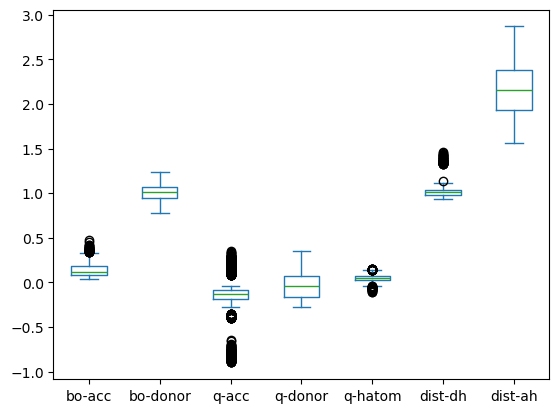
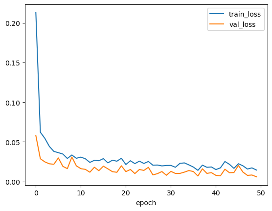
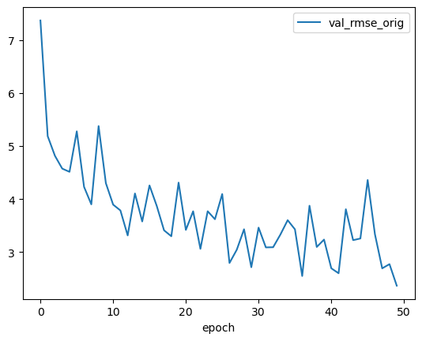
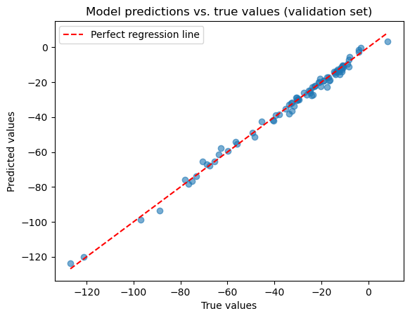

Train a Neural Network for Regression#
This practical session will cover the building and training of a neural network. We want to work on the regression problem with the “HB energy” data to be able to compare the training process and prediction results.
The model will be built with pytorch and we do hyperparameter optimization with optuna.
Alternative libraries for hyperparameter optimization and more:
Data preprocessing#
import os
import numpy as np
import pandas as pd
import matplotlib.pyplot as plt
import math
from sklearn.model_selection import train_test_split
from sklearn.compose import ColumnTransformer
from sklearn.preprocessing import OneHotEncoder, StandardScaler, MinMaxScaler
Load and inspect data#
df = pd.read_csv('data/HB_data.csv', sep=',')
display(df.head(5))
print(df.info())
| energy | bo-acc | bo-donor | q-acc | q-donor | q-hatom | dist-dh | dist-ah | atomtype-acc | atomtype-don | |
|---|---|---|---|---|---|---|---|---|---|---|
| 0 | -34.5895 | 0.2457 | 0.8981 | -0.088121 | 0.069022 | 0.030216 | 1.029201 | 1.670799 | N | N |
| 1 | -39.2652 | 0.2061 | 0.9089 | -0.100112 | 0.070940 | 0.042037 | 1.027247 | 1.772753 | N | N |
| 2 | -41.0025 | 0.1748 | 0.9185 | -0.108372 | 0.072666 | 0.050028 | 1.025135 | 1.874865 | N | N |
| 3 | -40.8874 | 0.1496 | 0.9269 | -0.114255 | 0.074115 | 0.055766 | 1.023101 | 1.976899 | N | N |
| 4 | -39.6642 | 0.1289 | 0.9341 | -0.118741 | 0.075412 | 0.060208 | 1.021107 | 2.078893 | N | N |
<class 'pandas.core.frame.DataFrame'>
RangeIndex: 1638 entries, 0 to 1637
Data columns (total 10 columns):
# Column Non-Null Count Dtype
--- ------ -------------- -----
0 energy 1638 non-null float64
1 bo-acc 1638 non-null float64
2 bo-donor 1638 non-null float64
3 q-acc 1638 non-null float64
4 q-donor 1638 non-null float64
5 q-hatom 1638 non-null float64
6 dist-dh 1638 non-null float64
7 dist-ah 1638 non-null float64
8 atomtype-acc 1638 non-null object
9 atomtype-don 1638 non-null object
dtypes: float64(8), object(2)
memory usage: 128.1+ KB
None
Check for outliers and missing data#
# Have a look at the descriptive statistics
df.describe().T
| count | mean | std | min | 25% | 50% | 75% | max | |
|---|---|---|---|---|---|---|---|---|
| energy | 1638.0 | -34.783759 | 29.955517 | -200.597000 | -48.226500 | -24.801450 | -14.991750 | 45.413900 |
| bo-acc | 1638.0 | 0.138418 | 0.075418 | 0.034200 | 0.080125 | 0.120600 | 0.181000 | 0.478100 |
| bo-donor | 1638.0 | 1.013692 | 0.087824 | 0.781200 | 0.942050 | 1.015000 | 1.073400 | 1.232500 |
| q-acc | 1638.0 | -0.155270 | 0.249997 | -0.898797 | -0.186461 | -0.130414 | -0.090575 | 0.353389 |
| q-donor | 1638.0 | -0.022809 | 0.151830 | -0.275322 | -0.159131 | -0.036496 | 0.073683 | 0.354334 |
| q-hatom | 1638.0 | 0.044391 | 0.041812 | -0.110008 | 0.022605 | 0.045868 | 0.067276 | 0.149418 |
| dist-dh | 1638.0 | 1.040342 | 0.108458 | 0.930018 | 0.978411 | 1.013607 | 1.038072 | 1.459200 |
| dist-ah | 1638.0 | 2.156605 | 0.290894 | 1.564120 | 1.927490 | 2.158575 | 2.383549 | 2.868591 |
# Boxplot to have a basic check for obvious outliers
df.drop(columns=["energy"]).plot(kind="box")
plt.show()

# Check for missing values
print('Missing values:', df.isnull().sum().sum())
Missing values: 0
Prepare train and test data#
We will apply similar preprocessing steps we’ve alreday seen in the regression session on day 1.
This time, we will also keep 5% of the data for a final validation on prediction quality after training.
# Get random 5% of data for validation
df_val = df.sample(frac=0.05, random_state=42)
# Drop those validation data from training data
df_tt = df.drop(df_val.index)
print(f"Training/Test data shape: {df_tt.shape}, Validation data shape: {df_val.shape}")
Training/Test data shape: (1556, 10), Validation data shape: (82, 10)
# Separate features and target
target_col = "energy"
X = df_tt.drop(columns=[target_col])
# We need y to be a 2-D array (n_samples x n_features)
y = df_tt[target_col].to_numpy().reshape(-1, 1)
# Get train and test splits
X_train, X_test, y_train, y_test = train_test_split(X, y, test_size=0.2, random_state=42)
# Preprocess and transform features
numerical_features = X.select_dtypes(include=["number"]).columns.tolist()
categorical_features = X.select_dtypes(include=["object"]).columns.tolist()
# Define scaling and encoding for X
x_preprocessor = ColumnTransformer(
transformers=[
("num", StandardScaler(), numerical_features),
("cat", OneHotEncoder(handle_unknown="ignore", sparse_output=False), categorical_features),
],
remainder="drop",
)
# Define scaling for y
y_scaler = StandardScaler()
# Fit scaling for X on train data only, apply (transform) scaling to both train and test
X_train_t = x_preprocessor.fit_transform(X_train)
X_test_t = x_preprocessor.transform(X_test)
# Fit scaling for y on train data only, apply (transform) scaling to both train and test
y_train_t = y_scaler.fit_transform(y_train)
y_test_t = y_scaler.transform(y_test)
# Get transformed feature names (handy for inspection)
feat_names = x_preprocessor.get_feature_names_out()
# Inspect transformed data
print("X_train: ", X_train_t.shape)
print("X_test: ", X_test_t.shape)
print("y_train: ", y_train_t.shape)
print("y_test: ", y_test_t.shape)
display(pd.DataFrame(X_train_t, columns=feat_names).head(5))
X_train: (1244, 16)
X_test: (312, 16)
y_train: (1244, 1)
y_test: (312, 1)
| num__bo-acc | num__bo-donor | num__q-acc | num__q-donor | num__q-hatom | num__dist-dh | num__dist-ah | cat__atomtype-acc_Cl | cat__atomtype-acc_F | cat__atomtype-acc_N | cat__atomtype-acc_O | cat__atomtype-acc_S | cat__atomtype-don_F | cat__atomtype-don_N | cat__atomtype-don_O | cat__atomtype-don_S | |
|---|---|---|---|---|---|---|---|---|---|---|---|---|---|---|---|---|
| 0 | -1.285813 | 0.917745 | -0.115091 | -0.282173 | 0.864921 | -0.662341 | 1.298361 | 0.0 | 0.0 | 0.0 | 1.0 | 0.0 | 0.0 | 0.0 | 1.0 | 0.0 |
| 1 | -0.647649 | 0.186561 | 0.970476 | -0.771634 | -0.619231 | -0.258013 | 1.832981 | 0.0 | 0.0 | 0.0 | 0.0 | 1.0 | 0.0 | 1.0 | 0.0 | 0.0 |
| 2 | -1.162635 | -0.394051 | 0.083728 | -0.078369 | 0.426753 | -0.294188 | 0.813984 | 0.0 | 0.0 | 0.0 | 1.0 | 0.0 | 0.0 | 1.0 | 0.0 | 0.0 |
| 3 | 0.306321 | -0.886830 | 0.274388 | 0.630579 | 0.169388 | -0.271833 | -1.260058 | 0.0 | 0.0 | 0.0 | 1.0 | 0.0 | 0.0 | 1.0 | 0.0 | 0.0 |
| 4 | 2.782975 | 0.231048 | -2.398073 | -1.403848 | -1.551664 | -0.384992 | -0.519736 | 1.0 | 0.0 | 0.0 | 0.0 | 0.0 | 0.0 | 0.0 | 1.0 | 0.0 |
pd.DataFrame(X_train_t, columns=feat_names).describe().T
| count | mean | std | min | 25% | 50% | 75% | max | |
|---|---|---|---|---|---|---|---|---|
| num__bo-acc | 1244.0 | -3.726922e-16 | 1.000402 | -1.391955 | -0.783930 | -0.226356 | 0.561194 | 4.424904 |
| num__bo-donor | 1244.0 | -2.077652e-16 | 1.000402 | -2.635512 | -0.825518 | 0.005761 | 0.690747 | 2.512432 |
| num__q-acc | 1244.0 | 3.212864e-17 | 1.000402 | -2.898847 | -0.137707 | 0.108404 | 0.269204 | 1.999119 |
| num__q-donor | 1244.0 | 1.427940e-18 | 1.000402 | -1.572323 | -0.879873 | -0.095105 | 0.625609 | 2.481237 |
| num__q-hatom | 1244.0 | -1.427940e-18 | 1.000402 | -3.597710 | -0.516487 | 0.048946 | 0.545109 | 2.483628 |
| num__dist-dh | 1244.0 | 1.115221e-15 | 1.000402 | -1.019973 | -0.572710 | -0.260462 | -0.034062 | 3.766413 |
| num__dist-ah | 1244.0 | 5.026347e-16 | 1.000402 | -2.028257 | -0.781578 | 0.003296 | 0.792599 | 2.457190 |
| cat__atomtype-acc_Cl | 1244.0 | 5.707395e-02 | 0.232077 | 0.000000 | 0.000000 | 0.000000 | 0.000000 | 1.000000 |
| cat__atomtype-acc_F | 1244.0 | 3.617363e-02 | 0.186797 | 0.000000 | 0.000000 | 0.000000 | 0.000000 | 1.000000 |
| cat__atomtype-acc_N | 1244.0 | 1.302251e-01 | 0.336686 | 0.000000 | 0.000000 | 0.000000 | 0.000000 | 1.000000 |
| cat__atomtype-acc_O | 1244.0 | 5.956592e-01 | 0.490961 | 0.000000 | 0.000000 | 1.000000 | 1.000000 | 1.000000 |
| cat__atomtype-acc_S | 1244.0 | 1.808682e-01 | 0.385064 | 0.000000 | 0.000000 | 0.000000 | 0.000000 | 1.000000 |
| cat__atomtype-don_F | 1244.0 | 5.948553e-02 | 0.236626 | 0.000000 | 0.000000 | 0.000000 | 0.000000 | 1.000000 |
| cat__atomtype-don_N | 1244.0 | 5.723473e-01 | 0.494937 | 0.000000 | 0.000000 | 1.000000 | 1.000000 | 1.000000 |
| cat__atomtype-don_O | 1244.0 | 2.636656e-01 | 0.440797 | 0.000000 | 0.000000 | 0.000000 | 1.000000 | 1.000000 |
| cat__atomtype-don_S | 1244.0 | 1.045016e-01 | 0.306033 | 0.000000 | 0.000000 | 0.000000 | 0.000000 | 1.000000 |
Build and train model with PyTorch#
import torch
import torch.nn as nn
from torch.utils.data import TensorDataset, DataLoader
import torch.optim as optim
from tqdm.auto import tqdm
import optuna
optuna.logging.set_verbosity(optuna.logging.WARNING)
# Check if GPU is available to be used with pytorch
device = torch.device("cuda" if torch.cuda.is_available() else "cpu")
print(f"Using device: {device}")
Using device: cpu
Define objects for model and training process#
# Define the model with a parameterizable architecture
class MLPRegressorTorch(nn.Module):
def __init__(self, in_dim, hidden=(64, 32), dropout=0.1):
super().__init__()
layers = []
prev = in_dim
for h in hidden:
layers += [
# fully connected layer from prev inputs to h outputs
nn.Linear(prev, h),
# non-linear activation with rectified linear unit
nn.ReLU(),
# regularization via dropout: randomly zeroes activations with probability
nn.Dropout(dropout)
]
prev = h
# Last layer is regression output with a single neuron for continuous value
layers += [nn.Linear(prev, 1)]
self.net = nn.Sequential(*layers)
def forward(self, x):
return self.net(x)
# Define function to create pytorch data loaders
def make_loaders(X_train_t, y_train_t, X_test_t, y_test_t, batch_size):
# Convert data (numpy arrays) to torch tensors
X_train_ts = torch.tensor(X_train_t, dtype=torch.float32)
y_train_ts = torch.tensor(y_train_t, dtype=torch.float32)
X_test_ts = torch.tensor(X_test_t, dtype=torch.float32)
y_test_ts = torch.tensor(y_test_t, dtype=torch.float32)
# Build torch dataset and dataloader for batches
train_loader = DataLoader(TensorDataset(X_train_ts, y_train_ts), batch_size=batch_size, shuffle=True)
test_loader = DataLoader(TensorDataset(X_test_ts, y_test_ts), batch_size=batch_size, shuffle=False)
return train_loader, test_loader
# Define function for training loop with hyperparameter configuration
# Also define a directory to store model checkpoints during training
CKPT_DIR = "optuna_ckpts"
os.makedirs(CKPT_DIR, exist_ok=True)
def objective(trial):
# Define hyperparameter search space for optuna
hidden_layers_list = [(256, 128, 64), (128, 64), (64, 32), (64,)]
idx = trial.suggest_int("hidden_layers_idx", 0, len(hidden_layers_list)-1)
hidden_layers = hidden_layers_list[idx]
dropout = trial.suggest_float("dropout", 0.0, 0.3)
lr = trial.suggest_float("lr", 5e-4, 3e-3, log=True)
#lr = 0.1
weight_decay = trial.suggest_float("weight_decay", 1e-6, 1e-3, log=True)
batch_size = trial.suggest_categorical("batch_size", [16, 32, 64, 128, 256])
epochs = 50
# Get data loaders for train and test data
train_loader, test_loader = make_loaders(X_train_t, y_train_t, X_test_t, y_test_t, batch_size)
# Initialise model and put to device (CPU or GPU)
model = MLPRegressorTorch(
in_dim=X_train_t.shape[1],
hidden=hidden_layers,
dropout=dropout
).to(device)
# Define optimizer: Adam with weight decay (L2 regularization)
optimizer = optim.Adam(model.parameters(), lr=lr, weight_decay=weight_decay)
# Define loss function: Mean Squared Error
loss_fn = nn.MSELoss()
# Check model progress and store checkpoints
best_rmse = float("inf")
best_ckpt_path = os.path.join(CKPT_DIR, f"best_trial.pt")
# Run epochs for training with validation at the end of each epoch
for epoch in tqdm(range(epochs), desc="Epochs", leave=False):
# Train for one epoch and update model parameters
model.train()
train_loss = 0.0
for x_batch, y_batch in train_loader:
x_batch, y_batch = x_batch.to(device), y_batch.to(device)
optimizer.zero_grad()
pred = model(x_batch)
loss = loss_fn(pred, y_batch)
loss.backward()
optimizer.step()
train_loss += loss.item() * x_batch.size(0)
train_loss /= len(train_loader.dataset)
# Validate in this epoch for test data without updating model parameters
model.eval()
val_loss = 0.0
preds, trues = [], []
with torch.no_grad():
for x_batch, y_batch in test_loader:
x_batch = x_batch.to(device)
pred = model(x_batch)
val_loss += loss_fn(pred, y_batch.to(device)).item() * x_batch.size(0)
preds.append(pred.cpu().numpy())
trues.append(y_batch.cpu().numpy())
val_loss /= len(test_loader.dataset)
# Get RMSE in original units (invert scaling for y)
y_pred = y_scaler.inverse_transform(np.vstack(preds))
y_true = y_scaler.inverse_transform(np.vstack(trues))
val_rmse = math.sqrt(float(np.mean((y_pred - y_true) ** 2)))
# Report to Optuna
trial.report(val_rmse, step=epoch)
trial.set_user_attr(f"train_loss_epoch_{epoch}", float(train_loss))
trial.set_user_attr(f"val_loss_epoch_{epoch}", float(val_loss))
trial.set_user_attr(f"val_rmse_epoch_{epoch}", val_rmse)
if trial.should_prune():
raise optuna.TrialPruned()
# Store model checkpoint if model improved
if val_rmse < best_rmse:
best_rmse = val_rmse
torch.save(
{
"state_dict": model.state_dict(),
"model_params": {
"in_dim": X_train_t.shape[1],
"hidden": hidden_layers,
"dropout": dropout,
},
},
best_ckpt_path,
)
trial.set_user_attr("best_model_ckpt", best_ckpt_path)
trial.set_user_attr("best_val_rmse", best_rmse)
return val_rmse
Run training with hyperparameter optimization#
# Run model training and hyperparameter optimization with optuna study
study = optuna.create_study(direction="minimize")
study.optimize(objective, n_trials=20, timeout=600)
Evaluate model#
best_trial = study.best_trial
best_params = best_trial.params
display("Params:", best_params)
print("Best RMSE:", best_trial.value)
'Params:'
{'hidden_layers_idx': 1,
'dropout': 0.08436995612384487,
'lr': 0.0027353884778077557,
'weight_decay': 1.3565682991643851e-06,
'batch_size': 16}
Best RMSE: 2.367166953422588
# Get all trials as DataFrame
df_all = study.trials_dataframe()
# Get best trial and its attributes
df_best = df_all[df_all["number"] == study.best_trial.number]
attrs = best_trial.user_attrs
# Collect metrics per epoch
records = []
max_epochs = max(
int(k.split("_")[-1]) for k in attrs.keys() if "epoch" in k
) + 1
for epoch in range(max_epochs):
record = {
"epoch": epoch,
"train_loss": attrs.get(f"train_loss_epoch_{epoch}"),
"val_loss": attrs.get(f"val_loss_epoch_{epoch}"),
"val_rmse_orig": attrs.get(f"val_rmse_epoch_{epoch}"),
}
if all(v is not None for v in record.values()):
records.append(record)
df_epochs = pd.DataFrame(records).set_index("epoch")
print(df_epochs.head())
train_loss val_loss val_rmse_orig
epoch
0 0.212837 0.057968 7.368030
1 0.062150 0.028728 5.186882
2 0.054407 0.024758 4.815195
3 0.044266 0.022345 4.574517
4 0.037966 0.021755 4.513753
# Inspect and plot training history for best trial
display(df_epochs.info())
df_epochs[['train_loss', 'val_loss']].plot(legend=True)
plt.show()
<class 'pandas.core.frame.DataFrame'>
Index: 50 entries, 0 to 49
Data columns (total 3 columns):
# Column Non-Null Count Dtype
--- ------ -------------- -----
0 train_loss 50 non-null float64
1 val_loss 50 non-null float64
2 val_rmse_orig 50 non-null float64
dtypes: float64(3)
memory usage: 1.6 KB
None

df_epochs.val_rmse_orig.plot(legend=True)
plt.show()
print("Best RMSE: ", df_epochs.val_rmse_orig.min())

Best RMSE: 2.367166953422588
Load pretrained model and predict#
Now we can load a model with our best parameter settings. We use our checkpoint for this. We finally want to predict on our validation data we sempled at the very beginning.
ckpt_path = best_trial.user_attrs["best_model_ckpt"]
ckpt = torch.load(ckpt_path, map_location=device)
# Our checkpoint contains the state dict with the trained model parameters
list(ckpt["state_dict"].items())[0]
('net.0.weight',
tensor([[ 1.2998e-01, -5.8599e-02, -9.1701e-03, ..., 8.2666e-02,
-2.6167e-01, -1.7932e-01],
[ 1.2702e-01, 6.9853e-02, -1.2293e-01, ..., 1.6299e-02,
-1.6481e-02, -4.8893e-04],
[-1.5479e-02, 1.0947e-01, 6.0697e-01, ..., -1.0442e-02,
-1.9027e-01, 2.7875e-03],
...,
[ 1.3420e-01, -5.1409e-02, 9.5353e-03, ..., -7.1964e-02,
-7.3765e-02, -5.6624e-02],
[-2.4891e-01, -2.2578e-01, 4.7792e-01, ..., -2.1212e-01,
1.6324e-01, 2.6180e-03],
[-1.8884e-01, -3.5862e-02, -1.8236e-01, ..., -1.3896e-01,
-5.1755e-02, -2.4016e-03]]))
best_model = MLPRegressorTorch(
in_dim=ckpt["model_params"]["in_dim"],
hidden=ckpt["model_params"]["hidden"],
dropout=ckpt["model_params"]["dropout"],
).to(device)
best_model.load_state_dict(ckpt["state_dict"])
best_model.eval()
MLPRegressorTorch(
(net): Sequential(
(0): Linear(in_features=16, out_features=128, bias=True)
(1): ReLU()
(2): Dropout(p=0.03769065706514282, inplace=False)
(3): Linear(in_features=128, out_features=64, bias=True)
(4): ReLU()
(5): Dropout(p=0.03769065706514282, inplace=False)
(6): Linear(in_features=64, out_features=1, bias=True)
)
)
# Separate features and target
X_val = df_val.drop(columns=["energy"])
y_val = df_val["energy"]
# Apply same scaler(s) used for training
X_val_t = x_preprocessor.transform(X_val)
y_val_t = y_scaler.transform(y_val.values.reshape(-1, 1))
# Convert to torch tensors
X_val_ts = torch.tensor(X_val_t, dtype=torch.float32).to(device)
y_val_ts = torch.tensor(y_val_t, dtype=torch.float32).to(device)
with torch.no_grad():
y_pred_t = best_model(X_val_ts).cpu().numpy()
# Invert scaling for predictions and targets
y_pred = y_scaler.inverse_transform(y_pred_t)
y_true = y_scaler.inverse_transform(y_val_ts.cpu().numpy())
# Validate with regression metrics
from sklearn.metrics import mean_squared_error, r2_score
rmse = np.sqrt(mean_squared_error(y_true, y_pred))
r2 = r2_score(y_true, y_pred)
print(f"RMSE on validation sample: {rmse:.3f}")
print(f"R2-score on validation sample: {r2:.3f}")
RMSE on validation sample: 2.065
R2-score on validation sample: 0.994
# Plot predictions vs true values
plt.scatter(y_true, y_pred, alpha=0.6)
plt.title("Model predictions vs. true values (validation set)")
plt.xlabel("True values")
plt.ylabel("Predicted values")
plt.plot(
[y_true.min(), y_true.max()],
[y_true.min(), y_true.max()],
"r--", label="Perfect regression line")
plt.legend()
plt.show()
